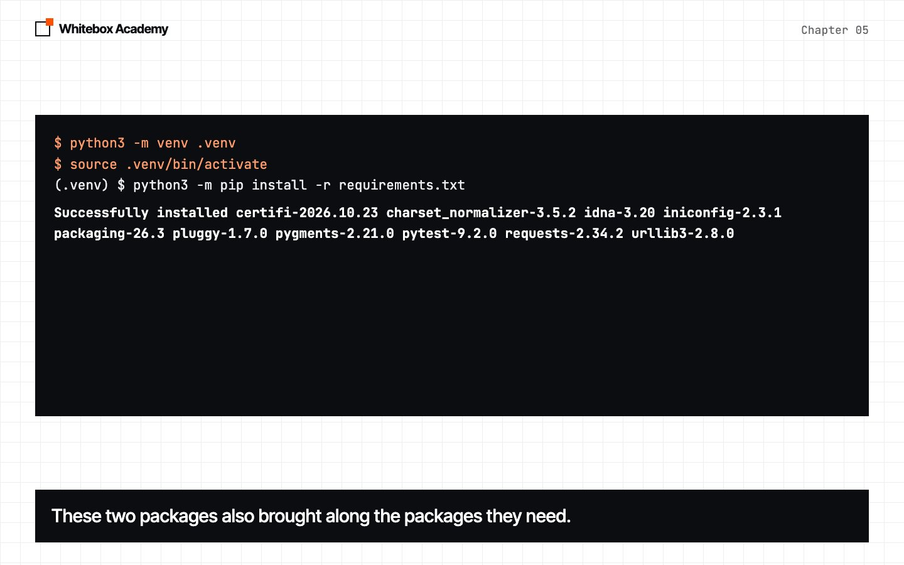
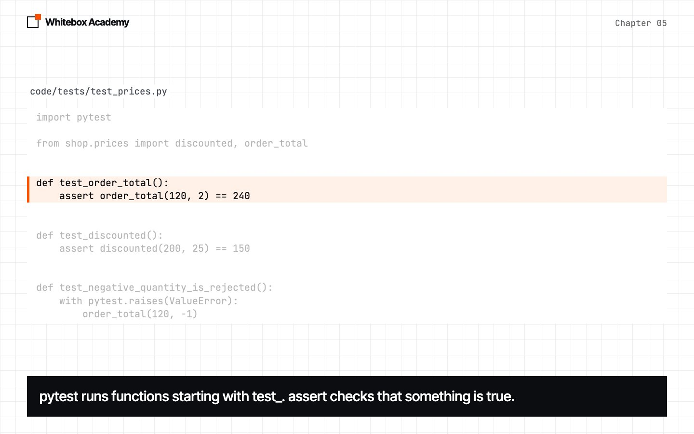
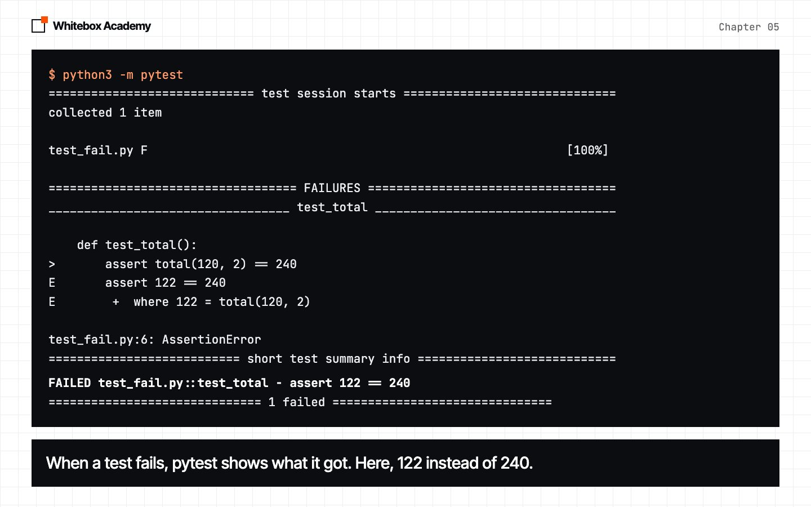
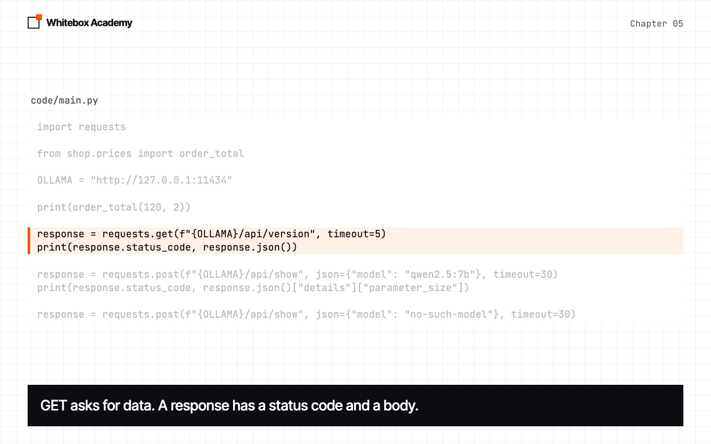

Virtual environments, packages, pytest and HTTP
Set up a real project, test it with one command, and talk to a web service.
From single files to real projects
So far, each program has been a single file using only what comes with Python. Real projects use other people’s code, have automated tests, and talk to other services. Your agent will do all three.
Start Ollama before you begin.
Set up, test, connect
-
Create an environment
A package is code someone else wrote. A virtual environment is a private folder of packages for one project. Create it once with
python3 -m venv .venv, then activate it each time you open a terminal. pip installs what’s listed inrequirements.txt.
-
Write a test
A test is code that checks your code. pytest runs every function starting with
test_.assertchecks that something is true, andpytest.raiseschecks that an error really happens.
-
Read a failure
When a test fails, pytest shows what it got. Here it got 122 when it expected 240, because the function added the numbers when it should have multiplied them.

-
Talk over HTTP
HTTP is how programs talk over a network.
GETasks for data, andPOSTsends it. Ollama runs a small web server on your computer, and every model call in this course uses HTTP. Always set atimeout.
| Status code | Meaning |
|---|---|
| 200 | It worked |
| 404 | It wasn’t found |
| 429 | Too many requests |
| 500 | The server had a problem |
Run it
From chapters/05-projects-testing-http/code, run this. The last line is a real failure, and no Python error was raised. A 404 is still a response, so always check the status code.
$ python3 main.py
240
200 {'version': '0.34.4'}
200 7.6B
404 {'error': "model 'no-such-model:latest' not found"}
Five errors you’ll meet
These are real error messages:
| What happened | What Python says | The fix |
|---|---|---|
| The environment isn’t active | ModuleNotFoundError: No module named 'requests' | Activate .venv, then install |
| pytest isn’t installed | No module named pytest | Activate .venv, then install |
| You’re in the wrong folder | ModuleNotFoundError: No module named 'shop' | Run it from the code folder |
| The server isn’t running | requests.exceptions.ConnectionError: HTTPConnectionPool(...) | Start Ollama |
| The reply isn’t JSON | requests.exceptions.JSONDecodeError: Expecting value: line 1 column 1 (char 0) | Check the status code and URL |
Exercises
From now on, you’ll check your work with pytest. Open exercises.py and complete TODOs 1 to 4, then complete TODO 5 in test_mine.py:
read_response: handle a status code.fetch_version: make a GET request.send_json: make a POST request.checked_quantity: raise an error.test_upper: write your own test.
Your functions receive get and post as parameters, so the tests can use fake versions and run without a network. You’ll use the same trick with a fake model in chapter 13.
$ python3 -m pytest test_exercises.py test_mine.py
You’ve finished when you see 5 passed.
Common mistakes
- Forgetting to activate
.venvin a new terminal. - Sharing or committing
.venv. Sharerequirements.txtinstead. - Leaving out
timeout. - Assuming a response means success. Check the status code.
Part 0 checkpoint
You’ve finished the Python primer. Before moving on, complete the small order tracker in checkpoints/part-0. It uses everything from chapters 01 to 05 and takes about 45 minutes. Run python3 -m pytest test_checkpoint.py until you see 5 passed.
What you opened
- A virtual environment keeps each project’s packages separate.
requirements.txtlists what a project needs.- pytest runs your tests with one command.
- HTTP requests have a URL and a method, and responses have a status code.
To learn more, see the pytest documentation and the Requests documentation.